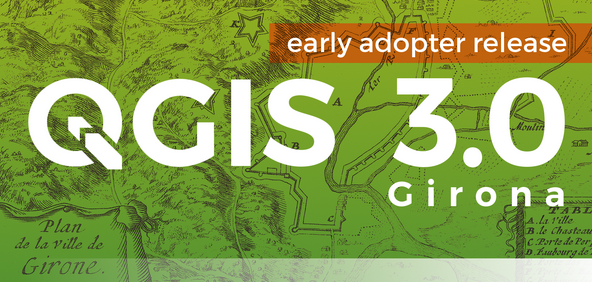
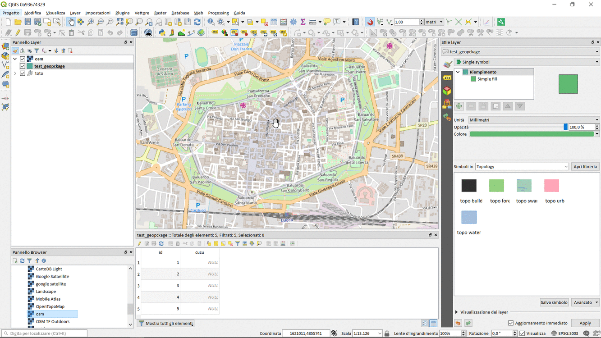
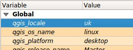
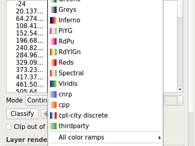
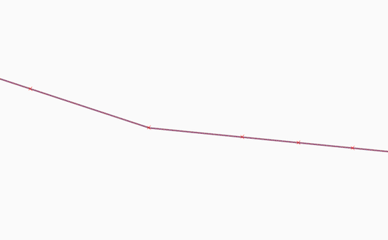
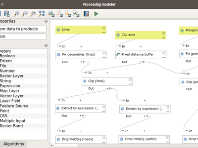

QGIS 3.0の変更履歴¶

最高のQGISリリース！QGIS 3.0は、私たちの最愛のオープンソースGISの徹底的な見直しとクリーンアップです。QGIS 3.0には、新しい変更の大規模なリストがあります。ここでは、その主な内容について説明します。常にQGISはオープンソースプロジェクトであり、可能であれば、 寄付 、 スポンサーシップ またはコード文書、ウェブサイトへの貢献などによって私たちの仕事を支援することをご検討ください。
謝辞
We would like to thank the developers, documenters, testers and all the many folks out there who volunteer their time and effort (or fund people to do so). From the QGIS community we hope you enjoy this release! If you wish to donate time, money or otherwise get involved in making QGIS more awesome, please wander along to qgis.org and lend a hand!
QGIS is supported by donors and sponsors. A current list of donors who have made financial contributions large and small to the project can be seen on our donors list. If you would like to become and official project sponsor, please visit our sponsorship page for details. Sponsoring QGIS helps us to fund our six monthly developer meetings, maintain project infrastructure and fund bug fixing efforts. A complete list of current sponsors is provided below - our very great thank you to all of our sponsors!
QGISはフリーソフトウェアであり、使用するために何かを支払う義務はありません。事実、私達は、貧富や社会的地位にかかわらず、遠方からも広い範囲の人々がこれを使用することを奨励したいと考えています。空間意思決定ツールによって人々に力を与えることが人類全員にとってより良い社会につながるものと私達は信じています。
- QGISバージョン3.0のスポンサー
- 一般
- ユーザーインターフェース
- 3D地物
- 式
- 文書化
- シンボル体系
- 機能：データ定義のシンボルレイヤーの可視性
- 機能：シングルバンド疑似カラーレンダリングに使用されるカラーランプの保存と復元
- 機能：使用可能なシンボルユニットにポイントとインチを追加する
- 機能：新しいカラーランプボタンウィジェット
- 機能：スタイル管理の再作業とアップグレード
- 機能：ラスターレンダラーの複数項目の色と透明度の設定をサポート
- 機能：カラーボタンのドロップダウンメニューにアルファスライダを表示する
- 機能：疑似色レンダラに対するラスター範囲ツールバー・アクションのサポート
- 機能：paletted レンダラへの 透明度のサポート
- 機能：キャンバス更新時のラスター自動stretching
- 機能：注記の内容のマージンを制御する
- 機能：注記は塗りシンボルスタイルを使用してスタイル設定できます
- 機能：ポイントクラスターレンダラー
- 機能：QGIS 3.0の新しい地図彩色アルゴリズム
- 機能：新しい 「プリセット」カラーランプオプション
- 機能：シンボルレイヤーを一時的に無効にする
- 機能：離散ラスターの簡単なスタイル設定
- ラベル付け
- ダイアグラム
- レンダリング
- デジタイジング
- データ管理
- フォームとウィジェット
- レイヤーの凡例
- マップコンポーザ
- 分析ツール
- プロセッシング
- 機能：ラインをオフセットする新しいアルゴリズム
- 機能：片面バッファ用の新しいアルゴリズム
- 機能：簡単化のための簡略化方法の選択肢を追加
- 機能：モデルでの出力ジオメトリタイプのサポート
- 機能：滑らかなアルゴリズムのための角度閾値
- 機能：Z / M寸法と曲線形状のより良いサポート
- 機能：プロセシングに追加されたラスター解析アルゴリズム
- 機能：特定のノードを抽出する新しいアルゴリズム
- 機能: ツールボックスのゾーン統計プラグインからのゾーン統計の公開
- 機能: SpatiLiteのSQL実行アルゴリズムの追加
- 機能：ラインを拡張する新しいアルゴリズム
- 機能：表現アルゴリズムによる新しい抽出
- 機能: SpatiLiteのSQL実行アルゴリズムの追加
- 機能：補間アルゴリズム
- 機能：式でジオメトリを計算する新しいアルゴリズム
- 機能：レイヤーアルゴリズムにスナップジオメトリ
- 機能：式の新しい入力タイプ
- 機能：SplitWithLines
- 機能: 到達不能極アルゴリズム
- 機能：属性別に抽出するとnull / notnull値を抽出できます
- 機能：属性インデックスアルゴリズムを作成する
- 機能：新しい「ドロップジオメトリ」アルゴリズム
- 機能：新しい普遍的な「フィールドの基本統計」アルゴリズム
- 機能：ポートヒートマッププラグインから処理アルゴリズム
- 機能：ジオメトリを直交化するための新しいアルゴリズム
- 機能：ネットワーク解析アルゴリズム
- 機能：PDF / SVGとしての処理モデルのエクスポート
- 機能：テーブルを切り詰める新しいアルゴリズム
- 機能: 「不正な地物の処理」オプションの追加
- 機能: ネイティブのmakeValid()実装を使用した不正なジオメトリを訂正するアルゴリズム
- 機能: スクリプトのモデルの取得ダイアログへの検索の追加
- 機能：一般重心アルゴリズム
- 機能: ノード抽出アルゴリズムの改善
- 機能：ポイントを移動（移動）するための新しいアルゴリズム
- 機能：改良された処理モデラーウィンドウ
- 機能：新しいラスター独自の値レポートアルゴリズム
- 機能: コア処理からのTauDEMプロバイダの削除
- 機能：処理からファイルをダウンロードする
- 機能：ジオメトリアルゴリズムに沿って最適化されたポイント
- 機能：式アルゴリズムによる並べ替え
- アプリケーションとプロジェクトのオプション
- ブラウザ
- データプロバイダ
- 機能：新しいレイヤーの追加ダイアログ
- 機能：ジオパッケージ
- 機能：すべてのGDAL書き込み可能なラスター形式をサポートし、ラスターレイヤーの[名前を付けて保存]ダイアログ
- 機能：gpkg、spatialiteおよびメモリレイヤープロバイダにおけるZ / Mジオメトリのサポート
- 機能：一意と非null制約の処理
- 機能：GeoNodeインテグレーション
- 機能：spatialiteプロバイダーのリテラルのデフォルト値を検出する
- 機能：spatialiteプロバイダのアトリビュートインデックスサポートを作成する
- 機能：配列のサポートを追加する
- 機能：PostGISデータプロバイダにおけるHStoreのサポート
- 機能：PostgresQLの関係の自動発見を追加する
- 機能：レイヤー間のデータ依存関係
- 機能：dxf export：サポート再投影
- 機能：GPKGとSpatialiteのデータベースにスタイルをロード/保存する
- 機能：デフォルト処理の改善
- QGISサーバー
- プラグイン
- プログラマビリティ
QGISバージョン3.0のスポンサー¶


シルバー¶
 シルバー： 3000ユーロ
シルバー： 3000ユーロ
朝日航洋株式会社 |
デンマークQGISユーザーグループ |
ARTOGIS a/s |
ドイツQGISユーザーグループ |
OPENGIS.ch GmbH |
Terraplan |
公共事業事務所、洪水リスク管理・データ管理課 |
WIGeoGIS |


ブロンズ¶
 ブロンズ： 500ユーロ
ブロンズ： 500ユーロ
2D3D.GIS |
Integrate Sustainability Pty Ltd |
Ager Technology |
LandPlan OS GmbH |
アルタehf |
Lutra Consulting |
ジオノヴァー協会 |
MHTC Ltd |
Automatic Knowledge |
MappingGIS |
BGEO Open GIS, SL |
Mapzen |
Cawdor Forestry |
Mierune LLC |
Chartwell Consultants Ltd. |
OSGeo.JP |
カニング市 |
Open Geo Groep |
カニング市 |
Pixalytics |
|
Datenbankgesellschaft mbH |
ブラジルQGISユーザーグループ |
Dr. Kerth + Lampe Geo-Infometric GmbH |
スウェーデンQGISユーザーグループ |
FORNAT AG |
QTibia Engineering |
Forest Design SRL |
ウィンザー・メイデンヘッド独立行政区 |
GAIA mbH |
SOLTIG (Soluciones en Tecnologías de Información Geográfica) |
GIS Support Sp. z o.o. |
Septima |
GKG Kassel, (Dr.-Ing. Claas Leiner) |
Solargis s.r.o. |
Gaia3D, Inc. |
Syddjurs Kommune |
Gemeente Gouda |
TerreLogiche |
GeoS Geodätische Software Andreas Hellinge |
Trage Wegen vzw |
|
Geographica |
Urbsol |
Gis3W |
WAGNER-IT |
Infraplan Engineering Services Pvt. Ltd. |
WhereGroup GmbH & Co. KG |
Ingenieurbüro Kauppert |
tkt teleconsult Kommunikationstechnik GmbH |
|
Insurance Australia Group Limited (IAG) |


一般¶
機能：ゾーン統計プラグインを削除する¶
この機能はプロセッシングで完全に公開されました。プロセッシングはこの機能が存在する論理的な場所です。
機能：dxf2shpコンバータプラグインを削除する¶
この機能はOGRで利用可能であり、もはやこのタスクを実行する専用のQGISプラグインは必要ありません
機能：コアプロセッシングからTauDEMプロバイダを削除した¶
TauDEMはかなり特殊なツールセットであり、いくつかの追加ツールをインストールする必要があります。そこで、それを別のプロバイダにして、コードベースのコアサイズとメンテナンスの労力を削減することにしました。
機能：QGISヘルプファイルの場所を設定するためのより多くのヘルプと可能性¶
アルゴリズムとダイアログのその他のヘルプボタンが追加され、オンラインのQGISドキュメントが表示されます。
構成により、オンライン、組織のネットワークまたはローカルコンピュータに保存されたコンテキストヘルプにアクセスできます。また、異なるヘルプソースを組み合わせることもできます。

この機能はAlexander Bruyによって開発されました

機能：otbおよびlidartoolsプロバイダをプロセッシングから削除しました。¶
新しいロジックは、外部ソフトウェアライフサイクルに従うことができるプラグインプロバイダを開発することです。
ユーザーインターフェース¶
機能：タブ付きのフローティングドックを有効にする¶
qt> 5.6のビルドでは、いくつかのフローティングドックを同じフローティングウィンドウにドロップすることができます。これらのフローティングドックは、タブとして表示されます。https://woboq.com/blog/qdockwidget-changes-in-56.html

機能：細かい解像度のマウスホイールズームをサポート¶
一部のマウス/ポインターデバイス（特にMacの場合）には、より細かい解像度があります。それらは高い頻度で小さいデルタ値でマウスホイールイベントを送信します。このようなデバイスでのズーム操作は、高速ズーム操作では使用できませんでした。これは3.0で修正されています。
この機能はMatthias Kuhnによって開発されました

機能：ロケータバー¶
ロケータバーは、QGISの左下隅に高速で常に準備が整った一般的なプラガブル検索機能です。
現在、アルゴリズム、アクション、レイヤー名を検索することができますが、属性値を入力することによって現在のアクティブなレイヤーの地物も選択できます。
「容易に」拡張可能であるため、全員が自分の国内ジオコーディングサービスやその他の検索オンラインまたはデータベース検索機能用のQgsLocatorFilterを作成できます。

この機能はNyall Dawsonによって開発されました
機能：ノンブロッキング、インライン編集¶
- 地図単位での縮尺設定
- カラーブリュワーと限定ランダムランプエディタ
- スタイルパネルのインラインカラーリストで色を編集する
- コンポーザの色と記号のインライン編集
スタイルパネルのインライン表示

機能：改良された地図キャンバス「画像として保存」¶
地図キャンバスの「画像として保存」機能が拡張され、ユーザーはその場で縮尺、解像度、範囲を微調整できます。範囲は高さと幅の比に制限できます。また、地図キャンバスを解像度に依存しないPDFにすばやくエクスポートするために、PDFとして保存機能が追加されました。

この機能は Andreas Neumann によって資金提供されました(partial funding)
この機能は Mathieu Pellerin によって開発されました
機能：メインウィンドウで開いたパネルの表示を切り替えます¶
アクセス は： - 「ビュー」メニュー> パネル表示非表示を切替 - Ctrl+Tab キーボードショートカット

この機能は Mathieu Pellerin によって開発されました
機能：ユーザーインターフェイスの一貫性の向上¶
QGISグラントプログラムが主催し、「UIコントロールに一貫性を加える」というこの作品は、完成し、マスターに統合されました。この作業の一環として、以下の作業が行われました。
- transparent / opacity / alpha に関するすべてのAPIは、 setOpacity() および opacity() に標準化されました。このメソッドは、0（透明）と1（不透明）の間で2倍の値を取り、Qt APIとの一貫性を保ちます。
- 新しいウィジェットQgsOpacityWidget が作成されました。これは、不透明度が設定されているUIを通じてどこでも使用されています。これにより、一貫性のある動作が保証され、どこでも不透明度コントロールが検索されます。
- 回転 はAPIとUIで標準化されているので、回転は常に時計回りに適用されます。-360〜360の値を受け入れるように、すべての回転ウィジェットが更新されました。
- 2.x回転とデータ定義の回転を使用したラベル付きプロジェクトは3.0で開くと透過的に アップグレード されます
- 縮尺APIは、QGIS API全体で一貫するようになりました。 縮尺分母と実数縮尺の混乱がなくなりました 、現在はすべてが縮尺分母で動作しています。すべての縮尺範囲コールの動作は、最小/最大縮尺（およびこれに関する明示的なAPIドキュメント）の共通の意味で標準化されています。
- すべての縮尺コントロールは、UI全体の一貫性のために標準縮尺ウィジェットを使用するようになりました
- ラベリングは残りのUIと同じ最小/最大縮尺の定義を使用し、既存のプロジェクトは3.0で開くと透過的にアップグレードされるようになりました。
- ルールベースの縮尺制限を破るバグを含む、縮尺使用に関する最も顕著なバグを修正
QGIS PSCとこのプロジェクトをスポンサーにして、それを進めることを可能にするプロジェクトドナーに感謝します！
この機能は、QGIS出資者とドナーによって資金提供されました
この機能は、 Nyall Dawson によって開発されました。
機能：単一のグループ内のレイヤーを開く¶
多くのサブレイヤーを開くと、凡例の同じグループ内でそれらをすべて開くことができます。

この機能は Kartoza によって資金提供されました
この機能は Etienne Trimaille によって開発されました
3D地物¶
機能：3Dマップビューと地形生成¶
私たちは、QGISで真新しいネイティブ3D地図ビューを持っています！3D地図ビューでは、上の地形に2D地図（プロジェクトレイヤーからレンダリング）が表示されます。デフォルトでは地形は平面ですが、高さデータのソースとしてデジタル標高モデルを使用したラスターレイヤーを使用することは可能です。
プロジェクトの3Dビューを追加するには、メニューの表示>新規3Dマップビューを使用します。これは、3D地図キャンバスを備えた新しいドックウィジェットを作成します。3Dビューは、2D地図ビューのような同じコントロールを使用して、マウスを使用してマップをブラウズします（地図をドラッグして移動するか、マウスホイールをズームするか）か、キーボードの矢印キーを使用します。さらに、3Dビューに固有のカメラコントロールがあります。次のいずれかの方法でカメラを回転および傾けることができます。
- 中マウスボタンが押された状態でマウスをドラッグすることにより
- Shiftキーを押しながらマウスの左ボタンを押しながらマウスをドラッグすると
- Shiftキーを押しながら上/下/左/右キーを使用して

この機能は QGIS.ORG によって資金提供されました
この機能は、 Martin Dobias (Lutra Consulting) によって開発されました
機能：地図レイヤーの3Dレンダラー¶
デフォルト設定では、地図レイヤーは地形の上に2D地図画像にレンダリングされます。しかし、いくつかの地図レイヤーに3Dレンダラを設定することで、3Dワールドをより有効に活用できます。3Dレンダラでは、データを3Dビューで真の3Dオブジェクトとして表示できます。これは現在、ベクターレイヤー（すべてのジオメトリタイプ - ポイント、ラインまたはポリゴン）でサポートされています。これにより、次のような視覚化が可能になります。
- 建物のフットプリントを持つポリゴンを押し出して（おそらくデータ定義の高さで）3Dビューを実現できます
- ツリーポイントの位置を持つポイントは、ツリーの3Dシンボル（単純な幾何学的形状またはサポートされているファイル形式からロードされた既存の3Dモデル）でレンダリングできます。
3Dレンダラを設定するには、レイヤースタイリングドックウィジェットまたはベクターレイヤプロパティダイアログを使用します。3Dレンダラの設定用の新しいタブがあります。

この機能は QGIS.ORG によって資金提供されました
この機能は、 Martin Dobias, Peter Petrik (Lutra Consulting) によって開発されました
式¶
機能：新しいグローバル式変数 @qgis_locale¶
QGISで使用される現在のロケールを返します。デフォルトでは、現在のシステムロケールです。ユーザーがQGIS設定でロケールオーバーライドを有効にすると、オーバーライドされたロケールが返されます。

この機能はAlexander Bruyによって開発されました
機能：地図設定の新しい式変数¶
- map_crs, map_crs_definition: retrieves crs details for map
- map_units: retrieves units for map (eg 'meters','degrees')
この機能は North Road によって資金提供されました
この機能は、 Nyall Dawson (North Road) によって開発されました
機能：新しい式の関数¶
アトラス式
- atlas_layerid および atlas_layername ：アトラスの現在のレイヤーのレイヤーIDとレイヤー名を返します。
集計の式
- array_agg(expression, group_by, filter) ：フィールドまたは式からの集計値の配列を返します。
配列の式
配列の作成と操作のための式関数を含む新しいグループ（リストデータ構造とも呼ばれます）。配列内の値の順序は、キーと値のペアの順序が無関係で値がキーによって識別される 『map’データ構造とは異なり、重要です。
- array(value1, value2, …) ：パラメータとして渡されたすべての値を含む配列を返します。
- array_append(array, value) ：最後に指定された値が追加された配列を返します。
- array_cat(array1, array2, …) ：連結されたすべての配列を含む配列を返します。
- array_contains(array, value): 配列に指定された値が含まれている場合はtrueを返します。
- array_distinct(array): 指定された配列の異なる値を含む配列を返します。
- array_find(array, value) ：配列内の値のインデックス（最初のものは0）を返します。値が見つからない場合は-1を返します。
- array_first(array) ：配列の最初の値を返します。
- array_get(array,index) ：配列のN番目の値（最初のものは0）を返します。
- array_insert(array, pos, value) ：与えられた位置に指定された値が追加された配列を返します。
- array_intersect(array1, array2) ：array1のいずれかの要素がarray2に存在する場合にtrueを返します。
- array_last(array) ：配列の最後の値を返します。
- array_length(array) ：配列の要素数を返します。
- array_prepend(array, value) ：最初に与えられた値を持つ配列を返します。
- array_remove_all(array, value) ：指定された値のすべてのエントリが削除された配列を返します。
- array_remove_at(array, pos) ：指定されたインデックスが削除された配列を返します。
- array_reverse(array) ：配列値を逆順にして、指定された配列を返します。
- array_slice(array, start_pos, end_pos) ：配列の一部を返します。スライスは、 start_pos と end_pos の引数で定義されます。
- array_to_string(array, delimiter, empty_value) ：配列要素を、区切り文字で区切られた文字列に連結します。
- regexp_matches(string, regex, empty_value) ：グループをキャプチャしてキャプチャしたすべての文字列の配列を、文字列に対して指定された正規表現で表示する順序で返します。
- string_to_array(string, delimiter, empty_value) ：指定された区切り文字と空の値のオプションの文字列を使用して、文字列を配列に分割します。
色の式
- create_ramp(map, discrete) ：カラーストリングの地図とステップからグラデーションランプを返します。
日時式
- epoch(date) ：Unixエポックと指定された日付の間の間隔をミリ秒で返します。
一般的な式
- env(name) ：環境変数を取得し、その内容を文字列として返します。変数が見つからない場合、NULLが返されます。
- raster_statistic(layer, band, property) ：ラスターレイヤーから統計を返します。プロパティ：min / max / avg / range / stdev / sum
- with_variable(name, value, node): この関数は、3番目の引数として提供される式コードの変数を設定します。これは、同じ計算値を別の場所で使用する必要がある複雑な式に対してのみ有効です。
ジオメトリの式
- extend(geometry, start_distance, end_distance) ：行の先頭と最後に指定された量だけラインストリングを拡張します
- hausdorff_distance(ジオメトリa、ジオメトリb、densify _fraction) ：2つのジオメトリ間のハウスドルフ距離を返します。これは、基本的に、2つのジオメトリがどれほど類似しているか、または異なるかを示す指標であり、距離が近いほどジオメトリが類似していることを示します。
- inclination(inclination(point_a, point_b) ：point_a で point_bへ天頂（0）から天頂（180）まで測定した傾きを返します。
- make_circle(center, radius, segment) ：円形のセグメント化されたポリゴンを作成します。
- make_ellipse(center, semi_major_axis, semi_minor_axis, azimuth, segment) ：楕円形のセグメント化されたポリゴンを作成します。
- make_regular_polygon(center, radius, number_sides, circle) ：正多角形を作成します。
- make_triangle() ：ヘルプはまだありません
- minimal_circle(geometry, segment) ：ジオメトリの最小包囲円を返します。これは、セット内のすべてのジオメトリを囲む最小円を表します。
- offset_curve(geometry, distance, segments, join, miter_limit) ：線ストリングジオメトリを側面にオフセットして形成されたジオメトリを返します。距離はこのジオメトリの空間参照系によります。
- oriented_bbox(geom) ：入力ジオメトリの最小限の方向付けされたバウンディングボックスを表すジオメトリを返します。
- pole_of_inaccessibility（ジオメトリ、トレランス） ：サーフェスの境界から最も離れた内部ポイントであるサーフェスのアクセス不可能な近似ポールを計算します。この関数は、「polylabel」アルゴリズム（Vladimir Agafonkin、2016）を使用します。これは、指定された許容範囲内でアクセス不可能な真の極を見つけることを保証する反復手法です。
- simplify(geometry, tolerance) ：距離に基づく閾を使用してノードを削除することでジオメトリを単純化します（つまりDouglas Peuckerアルゴリズム）。このアルゴリズムは、ジオメトリの大きな偏差を保存し、ほぼ直線セグメントの頂点の数を減らします。
- simplify_vw(geometry, tolerance) ：エリアベースのしきい値（Visvalingam-Whyattアルゴリズム）を使用してノードを削除してジオメトリを単純化します。このアルゴリズムは、狭いスパイクまたはほぼ直線のセグメントなど、ジオメトリの小さな領域を作成する頂点を削除します。
- smooth(geometry, iterations, offset, min_length, max_angle) ：ジオメトリの角を四捨五入する余分なノードを追加してジオメトリを滑らかにします。
- single_sided_buffer(geometry, distance, segments, join, miter_limit) ：線ストリングジオメトリの片側をバッファリングして形成されたジオメトリを返します。距離はこのジオメトリの空間参照系によります。
レイヤープロパティ
- crs_description は、レイヤーのCRS記述を返します。
マップ式
このグループには、「マップ」データ構造（辞書オブジェクト、キー値ペア、または連想配列とも呼ばれます）の作成および操作のための式関数が含まれています。与えられたキーに値を割り当てることができます。マップオブジェクト内のキーと値のペアの順序は関係ありません。
- map(key1, value1, key2, value2, , …) ：パラメータのペアとして渡されたすべてのキーと値を含むマップを返します。
- map_akeys(map) ：マップのすべてのキーを配列として返します。
- map_avals(map) ：マップのすべての値を配列として返します。
- map_concat(map1, map2, …) ：指定されたマップのすべてのエントリを含むマップを返します。2つのマップに同じキーが含まれている場合は、2番目のマップの値が使用されます。
- map_delete(map, key) ：与えられたキーとそれに対応する値を削除したマップを返します。
- map_exist(map, key) ：指定されたキーがマップ内に存在する場合はtrueを返します。
- map_get(map, key) ：キーを与えると、マップの値を返します。
- map_insert(map, key, value) ：追加されたキー/値を持つマップを返します。
地図レイヤー
現在のプロジェクトで使用可能な地図レイヤーのリストを含む新しいグループ。内部地図レイヤーIDを返します。これは地図レイヤーを参照する他の多くの式関数で使用されます。
数式
- inclination(point_a, point_b) ：_a点を天頂（0）から天頂（180）まで測定した傾きを_bを指すように返します。
演算子
- ~: 文字列値の上で正規表現マッチを実行します。
レコードと属性の表現
「レコード」から名前が変更されました
- get_feature_by_id(layer, feature_id) ：レイヤー上のIDを持つ地物を返します。
- is_selected(feature, layer) ：地物が選択されているかどうかを返します。パラメータなしで呼び出された場合、現在の地物がチェックされます。
- num_selected(layer) ：指定されたレイヤーで選択された地物の数を返します。デフォルトでは、式が評価されるレイヤー上で動作します。
- represent_value(value, fieldName): フィールド値から設定を基に表現された値を返します。設定されているウィジェットの種類によって異なります。「バリューマップ」ウィジェットに使うことが多いです。
- ** uuid（）**：Qt QUuid :: createUuidメソッドを使用して、各行に対してUniversally Unique Identifier（UUID）を生成します。各UUIDは38文字です。
関係
プロジェクト内で使用可能なすべてのテーブル関係をリストする新しいグループ。relation _aggregate関数に便利です。
廃止予定
- $scale ：現在の地図の縮尺を取得するための古い変数。 maps_scale に置き換えられました
変更
- substr() 関数での変更
- 負の開始値をサポートする（例えば、substr（ 『hello』、 - 2）は 『lo’を返す）
- 負の長さの値をサポートする（例えば、substr(『hello』,3,-1) は 『ll’を返す）
- （例えば、substr（ 『hello world』、7）は 『world’を返します）
- strpos() は現在、文字列検索内の単純な文字列に依存しています
- regexp_match() は一致する正規表現のposを返すようになりました
この機能は多数の開発者によって開発されました
機能：集約関数で@parent変数を公開する¶
これにより、「集約」式関数のフィルタで親の地物から属性とジオメトリにアクセスできます。これにより、地物ごとに集計を計算できます。
E.g. max "measurement" for each point_station per polygon_research_area.
地物をデジタイズするときのデフォルトの属性値
aggregate(layer:='countries', aggregate:='max', expression:=\"code\", filter:=intersects( $geometry, geometry(@parent) ) )

この機能は Matthias Kuhn (OPENGIS.ch) によって開発されました
機能: コンポジション内の Item_variables 数式関数¶
これは、式がコンポジションコンテキスト内で使用されるときに、新しい項目_variables式関数を追加します。
この関数は、コンポジション内のアイテムのIDを1つの引数として取り、そのアイテムの変数名から値のマップを返します。これにより、コンポジション内の別のアイテムのプロパティを取得するラベルにテキストを挿入するなどの作業を行うことができます。
地図の縮尺をラベルに挿入する：
map_get( item_variables( 'map'),'map_scale')
地図中心のx座標をラベルに挿入する：
x(map_get( item_variables( 'map'),'map_extent_center'))
この機能は North Road によって資金提供されました
この機能は、 Nyall Dawson (North Road) によって開発されました
文書化¶
機能：プロセッシングアルゴリズムの拡張¶
プロセッシングアルゴリズムがレビューされ、文書化されました。[ヘルプ]ボタンをクリックすると、QGISのWebサイトが開き、アルゴリズムの説明に拡張されたドキュメントと画像が表示されます。

この機能は、QGISグラント提案 によって資金提供されました
この機能は、 Matteo Ghetta (Faunalia), Alexander Bruy によって開発されました
シンボル体系¶
機能：データ定義のシンボルレイヤーの可視性¶
シンボルレイヤーの可視性を制御するためにデータ定義のオーバーライドを追加します。特定のシンボルレイヤーの描画を無効にして、一致する地物を表示できます。
この機能は North Road によって資金提供されました
この機能は、 Nyall Dawson (North Road) によって開発されました
機能：シングルバンド疑似カラーレンダリングに使用されるカラーランプの保存と復元¶
この機能はAlexander Bruyによって開発されました
機能：使用可能なシンボルユニットにポイントとインチを追加する¶
この機能は North Road によって資金提供されました
この機能は、 Nyall Dawson (North Road) によって開発されました
機能：新しいカラーランプボタンウィジェット¶
QGIS 3.0では、新しく導入されたカラーランプボタンウィジェットを使用してカラーランプの処理が大幅に改善されました。 - プロジェクトを再オープンしたときにカスタムカラーランプ設定が記憶される - 色のランプ反転がウィジェット内に実装され、QGIS全体でこの動作が可能 - ウィジェットのポップアップメニュー内の「お気に入り」のカラーランプへの迅速なアクセス - カタログ（cpt-cityとColorBrewer）ははるかに快適です

この機能は Mathieu Pellerin によって開発されました
機能：スタイル管理の再作業とアップグレード¶
スタイル管理は大幅にアップグレードされました。改善点は次のとおりです。
- 新しいお気に入りのグループ化システムが追加されました。シンボルリストウィジェットはデフォルトで
- シンボルリストウィジェットで選択したタグ/スマートグループは、レイヤーを切り替えても（そしてセッションをまたいでも）持続するようになりました。
- ユーザーがカテゴリを追加／名前変更／削除すると、シンボルリストウィジェットは tag / smartgroup コンボボックスを更新します。
- ユーザーは、スタイルデータベースに保存しながら、直接タグ付けしたり、お気に入りに追加したりできます。
- スタイル管理を効率化するために、グループは削除され、完全にタグに置き換えられました
- タグがインポート/エクスポートのユーザーインターフェイスに統合されました

この機能は Mathieu Pellerin によって開発されました
機能：ラスターレンダラーの複数項目の色と透明度の設定をサポート¶
シングルバンド疑似カラーとパレットレンダラーの複数の値の色と透明度を同時に変更することが可能になりました。値リスト内の値を選択して右クリックすると、ポップアップメニューが表示されます。

この機能は Mathieu Pellerin によって開発されました
機能：カラーボタンのドロップダウンメニューにアルファスライダを表示する¶
色のアルファに素早く調整できます

この機能は North Road によって資金提供されました
この機能は、 Nyall Dawson (North Road) によって開発されました
機能：疑似色レンダラに対するラスター範囲ツールバー・アクションのサポート¶
この機能はMathieu Pellerinによって開発されました
機能：paletted レンダラへの 透明度のサポート¶
QGIS 3.0では、パレットレンダラの一意の値の透明度値を変更できるようになりました。

この機能は Mathieu Pellerin によって開発されました
機能：キャンバス更新時のラスター自動stretching¶
https://lists.osgeo.org/pipermail/qgis-developer/2016-September/044393.html を参照ラスタ疑似カラー更新後範囲自動分類へのフォローアップ。
この機能はEven Rouaultによって開発されました
機能：注記の内容のマージンを制御する¶
注記内のコンテンツの左/上/右/下余白を設定できます。
この機能は North Road によって資金提供されました
この機能は、 Nyall Dawson (North Road) によって開発されました
機能：注記は塗りシンボルスタイルを使用してスタイル設定できます¶
これは、QGISのシンボルエンジンを使用するように注記フレームのレンダリングを変更します。つまり、既存のすべてのフィルスタイルを使用して注記フレームをスタイル設定できるようになりました。
また、ペイント効果とデータ定義のシンボルパラメータ。
この機能は North Road によって資金提供されました
この機能は、 Nyall Dawson (North Road) によって開発されました
機能：ポイントクラスターレンダラー¶
近くのポイントを1つのレンダリングされたマーカーシンボルにグループ化する新しいシンボルレンダラー。必要に応じて、ラベルに1つのシンボルに集約された地物の数が表示されます。
さらに、点変位レンダラーのいくつかの改良がなされました。具体的には次のとおりです。
- 検索距離内に最初のグループを割り当てるのではなく、それらに「最も近い」グループにポイントが割り当てられるようになりました。場合によっては、この機能をより離れたクラスタに割り当てることで、予測可能なクラスタパターンが少なくなりました
- 個々のポイントがそれぞれの選択状態で正しく表示されるようになりました
- 多くのコードクリーンアップ+ドキュメンテーション。
開発者向け：QgsPointDisplacementRendererは、クラスターの検出とポイントのグループ化を処理する新しい純粋な仮想QgsPointDistanceRenderer基本クラスに分割されています。新しいクラスターレンダラーは、コードの重複を避けるためにこの基本クラスを再利用します。
詳細は、クラウドの 資金提供プログラム を参照してください。

この機能は、Andreas Neumann、Qtibia Engineering（Tudor Barascu）、Karl-MagnusJönsson、Geonesia（Nicolas Ponzo）、そして多数の匿名の後援者によって資金提供されました。
この機能は、 Nyall Dawson によって開発されました
機能：QGIS 3.0の新しい地図彩色アルゴリズム¶
http://nyalldawson.net/2017/02/new-map-coloring-algorithms-in-qgis-3-0/ 参照

この機能はNyall Dawsonによって開発されました
機能：新しい 「プリセット」カラーランプオプション¶
選択した色のリストからなるカラーランプを使用できます。現在、QGISでは、以前選択した色のリストを使用してレンダラーを分類する方法はありません。したがって、分類後に手動で色を変更することはできますが、定期的に同じ配色を使用している場合は苦労します。基本的には、カラービールのカラーランプオプションに似ていますが、ユーザーは使用するプリセットカラーリストを選択することができます（シンシアブリューワーは唯一の地図作成カラーエキスパートではありません）。

この機能は North Road によって資金提供されました
この機能は、 Nyall Dawson (North Road) によって開発されました
機能：シンボルレイヤーを一時的に無効にする¶
各シンボルレイヤーのプロパティの下に新しいチェックボックスを追加します。このチェックボックスを使用すると、レイヤが有効かどうかを制御できます。無効なレイヤーは描画されませんが、保存され、後で有効にすることができます。これにより、シンボルレイヤーを完全に削除することなく、シンボルの外観を微調整することが容易になります。

この機能は North Road によって資金提供されました
この機能は、 Nyall Dawson (North Road) によって開発されました
機能：離散ラスターの簡単なスタイル設定¶
QGIS 3.0では、ラスター用の既存のラスターパレットレンダラが、ランドマークやブーリアンラスターなどの個別のラスターレイヤーを簡単にスタイル設定できるようになっています。ここで、名前を変更した「パレット/ユニーク値」レンダラーを選択し、「ユニーク値の追加」ボタンをクリックすると、レイヤーからすべてのユニークなラスター値がロードされます。選択されたカラーランプを使用して自動的に色が割り当てられます。
ユニークな値の計算は、バックグラウンドスレッドで実行され、大規模な（またはリモートの）ラスターレイヤーに対応するUIを維持します。さらに、ユーザーは必要に応じて個々の新しいクラスを手動で追加し、既存のクラスの関連ピクセル値を編集できます。一度に複数のクラスを削除することもできます。同時に複数のクラスの色、透明度、ラベルを変更することもできます。
カラーパレットは、ESRI clr / GDAL / GRASSカラーテーブル形式をサポートしたテキストファイルからロードできます。カラーパレットは、共有のためにclrテキストファイルに保存することができます。

この機能は、StéphaneHenriod、Satelligence（ http://satelligence.com/ ）、Bird’s Eye View（ https://www.birdseyeviewgis.com/ ）、その他の匿名の支援者によって資金提供されました
この機能は、 Nyall Dawson (North Road) によって開発されました。
ラベル付け¶
機能：ラベルのフォントサイズをmm / pixels単位で許可する¶
この機能は North Road によって資金提供されました
この機能は、 Nyall Dawson (North Road) によって開発されました
機能：カスタムラベルツールバーが常に有効になりました¶
素晴らしい 補助データストレージ と編集可能な結合テーブルのおかげで、手動ラベルのカスタマイズが常に有効になりました。ラベルの位置、回転、またはラベルの可能な設定を変更してツールバーをアクティブにするために、データソースに専用フィールドを追加する必要はもうありません。 読み取り専用データソースのコピーはもういらないのでラベリングははるかに高速！ 警告 、ラベルは .qgd sqliteデータベース内、または.qgz圧縮プロジェクト内の あなたのプロジェクトファイルと共に保存される ファイルを選択した場合は、プロジェクトファイルを共有する場合は、その.qgdファイルを共有することを忘れないでください。
また、パワーユーザーにとっては、データソースにデータ定義されたフィールドを持つ従来の方法はまだあります。前と同じようにレイヤーのプロパティでそれらを定義するだけです！

この機能は、 フランスの生態系持続可能な発展省 によって資金提供されました。
この機能は OSLANDIA-Paul Blottiere によって開発されました
ダイアグラム¶
機能：データで定義されたプロパティ¶
より多くのデータ定義可能なプロパティのサポートをダイアグラムに追加する：
- 距離
- 優先度
- ZIndex
- IsObstacle
- Show
- AlwaysShow
- Diagram Start Angle
この機能は、QGISグラントプログラム によって資金提供されました
この機能は、 Nyall Dawson (North Road) によって開発されました
レンダリング¶
機能：ライブレイヤーのサポート¶
QGIS 3.0はライブレイヤーをサポートするようになりました。これらのレイヤーは、決まった時間間隔で自動的に再レンダリングされ、きれいでちらつきのない方法で再描画されます。ライブレイヤーは、車の艦隊、テレメトリデータを持っている鳥の群など、連続的に変化するデータを追跡するのに最適です。

この機能はKartoza＆North Roadによって開発されました
機能：PostgreSQLのNOTIFYシグナルからレイヤー更新またはレイヤーアクションをトリガする¶
ライブレイヤー効果に続いて、QGISでQGISに通知する場合にのみ、QGISでアクションまたはレイヤーの更新をトリガすることができます。それは間隔で更新するよりも少ないリソースを必要とし、QGISでチャットアプリケーションをコード化することさえできます:)
https://vimeo.com/236604742 参照
http://oslandia.com/en/2017/10/07/refresh-your-maps-from-postgresql/
この機能は QGIS.org助成金申請書 によって資金提供されました
この機能は OSLANDIA - Vincent Mora によって開発されました
機能：キャンバスを更新するときに不要な再描画を避けるためラベル付け結果をキャッシュ¶
この変更により、地図レンダリング後の画像にラベル付け結果をキャッシュすることができます。キャッシュされたラベルの結果画像を次のレンダリングで再利用できる場合は、ラベル付けの問題に関与するすべてのレイヤーを再描画し、ラベル付けソリューションを解決する必要はありません。基本的には、これは、 非ラベルレイヤーへの変更の結果としてのキャンバス更新がずっと速くなる ことを意味します。（ラベル付けソリューションの一部であるレイヤーを変更するには、すべてのラベル付きレイヤーを完全に再描画する必要があります）
この機能は、 Nyall Dawson (North Road) によって開発されました

デジタイジング¶
機能：ノードツールの範囲頂点選択¶
この機能により、ある地物から 範囲の頂点 を選択できます。
Shift + R を押すとアクティブになります。その後、地物内の開始点と最終点をクリックする必要があります。これにより、2つの間のすべての頂点が選択されます。
範囲の選択は、右クリックまたはEscキーを押すことによっていつでもキャンセルできます。
閉じた曲線（ポリゴン）の場合は、 Ctrl を押しながら最後の点をクリックすると、リングの周りを「より長い」方向に切り替えることができます。

この機能は、 `エコロジーを担当するフランスの省庁<https://www.ecologique-solidaire.gouv.fr/>`__ によって資金提供されました
この機能は、 Martin Dobias (Lutra Consulting) によって開発されました
機能：デフォルトのZ値オプションを追加する¶
ジオパッケージ/シェイプファイルを作成する：Z値を持つオプションが追加されました

この機能はAlexander Lisovenko / Paul Blottiereによって開発されました
機能：地物移動はアドバンストデジタル化のメリットを受けます¶
新しい 「クリック - クリックエルゴノミ」を使用して地物を移動し、高度なデジタイジングパネルとショートカットを使用して、角度、距離、正確なXYを制限します。
この機能は、Denis Rouzaud

機能：オフセット付きトレース¶
添付の画像に示されているように、オフセット付きのトレースデジタイジングツールを使用できるようになりました。

この機能は d.b.g. Datenbankgesellschaft mbH によって資金提供されました
この機能は Martin Dobias によって開発されました
機能：頂点ツールのオーバーホール¶
ノードツール（現在は頂点ツールに名前を変更）は、柔軟性を高めるために完全なリワークを経ています。より重要な変更のいくつかは次のとおりです。
- ユーザーが最初に地物を選択してから2番目のステップで頂点を編集するように要求するのではなく、複数の地物を同時に処理できるようになりました。したがって、複数の地物から頂点を選択して一度に移動または削除することは簡単です。特定の地物だけに頂点の選択を制限する必要がある場合、選択ツールで地物を最初に選択できます。頂点ツールは、そのような場合に選択された地物の頂点でのみ機能します。
- 現在選択されているレイヤーで作業するのではなく、編集モードにあるすべてのレイヤーで同時に作業できます。論理的には属しているが、異なるレイヤーにある地物の移動はずっと簡単です。それでも、頂点を選択するときに複数の選択肢がある場合、現在のレイヤーは尊重されます。
- ユーザーがマウスポインタを上に移動すると、地物とその頂点が強調表示され、視覚的なフィードバックが向上します。
- QGIS 2.xでは、頂点をクリックし、マウスの左ボタンを押したままドラッグし、最後にマウスボタンを離して頂点をドロップすることによって、頂点を移動させます。この動作は、ユーザーが最初に頂点をクリックしてクリックした後、マウスボタンを押さずにドラッグし、最終的な行先を再度クリックすることでドロップする「クリック - クリック」アプローチに変更されました。この変更の主張は次のとおりです：
- ノードを正確に配置する方が簡単です（マウスボタンに常に力を加える必要はありません）
- ノードを誤って移動しません
- 操作をキャンセルできます
- ノードが移動されている間にスペースバーを押して地図をパンすることができます
詳細は https://github.com/qgis/QGIS-Enhancement-Proposals/issues/69 参照。

この機能は QWAT によって資金提供されました
この機能は、 Martin Dobias (Lutra Consulting) によって開発されました
機能：頂点ツール：頂点を追加するための中間点マーカー¶
改良された頂点ツールは、地物の線分の中間点に余分なマーカーを表示するようになりました。このようなマーカーをクリックすると、新しい頂点が追加されます。セグメントをダブルクリックして頂点を追加する既存の方法は維持されています。

この機能は QWAT によって資金提供されました
この機能は、 Martin Dobias (Lutra Consulting) によって開発されました
機能：頂点ツール：ラインを続ける¶
頂点ツールを使用して線ストリングのジオメトリを編集する場合、マウスを最初または最後の頂点の方に移動すると、端点のすぐ隣に余分なマーカーが表示されます。マーカーをクリックすると、ジオメトリの最後に頂点が追加されます。

この機能は QWAT によって資金提供されました
この機能は、 Martin Dobias (Lutra Consulting) によって開発されました
機能：頂点ツール：高度なデジタイジングパネルのサポート¶
高度なデジタイジングパネルは、頂点ツールでも機能するようになりました。他の［デジタイジング］地図ツールと同様に、新しい頂点または既存の頂点の座標をパネルに入力することができます。

この機能は QWAT によって資金提供されました
この機能は、 Martin Dobias (Lutra Consulting) によって開発されました
データ管理¶


機能: 補助ストレージ機能¶
補助記憶域を管理するために、ベクターレイヤプロパティで新しいタブを使用できます。
新しいアクション プロジェクト内のデータをストアする が、データ定義メニューで、プロパティの補助データを簡単に管理する方法が提供されています。
補助データはsqliteデータベースに格納され、データベースファイルを可能な限り小さく保つために、（spatialiteプロバイダの代わりに）OGRデータプロバイダのおかげで管理されます。このデータベースファイル（拡張子 .qgd ）は、プロジェクトファイルのすぐ隣に保存されるか、新しい .qgz 形式で直接埋め込まれます。

この機能は Paul Blottiere / Oslandia によって開発されました
機能：メタデータのオーバーホール¶
QGISのメタデータシステムは、オーバーホールされました。QGIS 3.0では、QGISプロジェクトファイル形式とは別に独自の内部的なフォーマル化メタデータスキーマを導入しています。レイヤーのメタデータを読み書きするための新しいAPI機能を紹介します。メタデータの表示を編集から切り離し、新しいメタデータ編集ツールを追加しました。メタデータは現在プロジェクトファイルに保存されています。ファイルベースのレイヤーの横にXMLファイルとして保存することも、リモートレイヤーのためにローカルのsqliteデータベースに保存することもできます（PostGISなど）。
QEP-92 を参考にして、この作業で採用された設計上の考慮事項についてもっと読むことができます。
これは、QGISの完全かつ標準に準拠したメタデータインフラストラクチャの開発における最初の段階であることに注意してください。私たちは、メタデータシステムのより完全な実装を実現するための資金調達を模索しています。将来の資金が必要な作業パッケージ計画については、 この文書 を参照。
QGISメタデータスキーマの仕様は ここ です。
この仕事への主な資金提供者は 世界銀行 / GFDRR であり、 NINA によって支援的な資金提供があります。

この機能は 世界銀行/GFDRR によって資金提供されました
この機能は Kartozaと共同編集者 によって開発されました
機能：統合データソースマネージャダイアログ¶
データソースの管理とレイヤーの読み込みを処理する単一の統一されたダイアログ。

この機能は、Boundlessによって資金提供されました
この機能は、 Alessandro Pasotti によって開発されました
機能：OSM Downloaderツールが削除されました¶
QGIS 2.Xリリースで提供されていたOSMダウンローダツールは削除されています。QGIS 3.0に移植されたQuickOSMプラグインの利用をお勧めします。
フォームとウィジェット¶
機能：個々の編集ウィジェットのラベルを制御できるようにする¶
ドラッグアンドドロップデザイナーでは、項目をダブルクリックすると、各項目ごとにラベルを個別に表示するかどうかを制御できます。
この機能はMatthias Kuhnによって開発されました
機能：リレーションエディタウィジェットのリンク/リンク解除機能ボタンの設定を許可する¶
この機能はMatthias Kuhnによって開発されました
機能：タブとグループボックスの条件付き可視性¶
これにより、タブとグループボックスをドラッグアンドドロップデザイナーフォームで条件付きで表示または非表示にするための新しい設定オプションが追加されました。設定は、フィールドコンフィグレーションインターフェイスのデザイナツリーでダブルクリックして行います。可視性を制御する式を入力できます。この式は、フォームの変更時に毎回値が再評価され、それに応じて表示/非表示のタブまたはグループボックスが再評価されます。
この機能はMatthias Kuhnによって開発されました
機能：スマートなデフォルトの編集ウィジェットをプラグインで選択¶
今では、ウィジェットはフィールドのタイプをどれほどうまく扱うことができるかのスコアを与えることができます。優れたデフォルトウィジェットに導く
さらに、プラグインを追加して外部情報の機能でウィジェットタイプを選択することもできます。そのうちの1つはPostgreSQLのテーブルを使用し、各フィールドに使用するウィジェットのタイプと設定を指定できます。
外部キーのRelationReferenceウィジェットを自動的に選択します。
この機能はPatrick Valsecchiによって開発されました
機能：フィールドの制約を適用するかどうか¶
強制されない制約は、ユーザーに警告を表示するだけですが、機能のコミットを妨げません。強制制約は、ユーザーが非準拠の機能をコミットするのをブロックします。だから我々は今や柔らかい警告を持っている！プロバイダによって検出された制約は常に強制されます。

この機能はOpenGIS.chによって資金提供されました
この機能は、 Nyall Dawson (North Road) によって開発されました
機能：レイヤースコープのアクションを追加する¶
属性テーブル内には、個々の機能に基づいてではなく、レイヤー全体でアクションをトリガーする新しいボタンがあります。通常、すべての機能や選択に基づいてアクションを実行します。
この機能はMatthias Kuhnによって開発されました
機能：フォームフィルターモードでフィールド値をオートコンプリートで表示する¶
オートコンプリートはバックグラウンドでうまく更新されているので、関連テーブルに何百万ものレコードがあっても、guiは素早く反応します。
テキストフィールドの検索ウィジェットとして使用されています。そのため、フィルタをテキストフィールドに設定するか、レイヤーを選択してF3キーを押してフォームベースの選択/フィルタを起動すると、ブラウザウィンドウに表示されます。
この機能は North Road によって資金提供されました
この機能は、 Nyall Dawson (North Road) によって開発されました
機能：機能にズームを追加し、フォームの選択ダイアログでショートカットをフラッシュする¶
フォーム内の基準に一致する機能の非常に迅速なナビゲーションと識別を可能にする
この機能は North Road によって資金提供されました
この機能は、 Nyall Dawson (North Road) によって開発されました

レイヤーの凡例¶
機能：選択解除されたレイヤーを非表示にする¶
すべての選択解除されたレイヤーを素早く非表示にすることができます。これは非常に便利です。大規模なプロジェクトがあり、いくつかのレイヤーを除いてすべてをすばやく隠したい場合に便利です

この機能は、 SMEC（Surbana Jurong） によって資金提供されました
この機能は、 Nyall Dawson (North Road) によって開発されました
機能：グループ内のレイヤーの可視性の人間工学的変化¶
- グループをチェック/チェック解除しても、その子のチェック状態は変更されません。ノードがチェックされている場合にのみ、その親もすべて表示されます。
- あるグループには半チェック状態がありません
- チェックされていないグループの Ctrl+クリック はグループとそのすべての子孫をチェックします。
- チェックされていないレイヤーのクリックはラガーとその親をすべてチェックします。
- チェックされたグループのCtrl +クリックは、グループとそのすべての子孫のチェックを外します。
- チェックされたレイヤーのCtrl +クリックは、レイヤーとそのすべての親のチェックを外します。
- これらのアクションは、ツリービューのコンテキストメニュー項目で使用できます。
- 彼らまたはその親がチェックされていないので、目に見えないレイヤーはグレー表示されます。
この機能はEven Rouaultによって開発されました
マップコンポーザ¶
機能：コンポーザーテーブルグリッドの水平線と垂直線の描画を制御¶
これで、コンポーザテーブル項目の水平線と垂直線のレンダリングを独立して制御することが可能になりました。この追加された柔軟性は、このアイテムのスタイリングの可能性をQGIS内で直接費やします。

この機能は Mathieu Pellerin によって開発されました
機能：qptをQGISにドラッグしてテンプレートから新しいコンポーザを作成する¶
この機能は、 SMEC（Surbana Jurong） によって資金提供されました
この機能は、 Nyall Dawson (North Road) によって開発されました
機能：コンポーザーの凡例項目ラベルの行間隔のカスタマイズを可能にする¶
この機能は Mathieu Pellerin によって開発されました
機能：地図アイテムにCRSを選択できるようにする¶
これにより、地図項目のCRSがキャンバス/プロジェクトCRSと異なることができます。また、異なる地図アイテムが異なるCRSを持つこともできます。たとえば、概要地図を主地図とは異なるCRSに設定できます。
この機能は North Road によって資金提供されました
この機能は、 Nyall Dawson (North Road) によって開発されました
機能：描画中にシフトを保持ポリライン/ポリゴンが線の角度を制限する¶
この機能は North Road によって資金提供されました
この機能は、 Nyall Dawson (North Road) によって開発されました
機能：より多くのデータ定義可能なコントロール¶
アイテム フレーム および 背景色 データ定義 コンポーザのピクチャアイテムのsvgの色とアウトラインの幅 （特に画像に北の矢印が表示されている場合に便利です）データ定義 凡例のタイトルと列数 データ定義 スケールバーの色と線幅
この機能は、QGISグラントプログラム によって資金提供されました
この機能は、 Nyall Dawson (North Road) によって開発されました
機能：Map Composerオーバーホール¶
これは、QGISのコードでコンポジションがどのように管理されるかを大きく変更したものです。
ハイライトは：
- コンポジションの保存とシリアライズ/デシリアライズに使用される新しいQgsLayoutManagerクラス。QgsLayoutManagerはQgsProjectに添付されています。これにより、コアコードはプロジェクトに添付されたコンポジションにアクセスできます。すべてのコンポジットの処理がアプリからコアに移りました。これにより、サーバ（および他のアプリではないアプリケーションのQField / roam？）が、脆弱なxml解析に頼らずにプロジェクト構成に簡単にアクセスできます。
- コンポーザウィンドウはオンデマンドで作成され、クローズ時に破棄されます。これにより、プロジェクトをロードするときに、すべてのコンポーザー項目のすべてのコンポーザーウィンドウとウィジェットを作成する必要がありません。 これは、以前は構成が遅かったプロジェクトをロードする主な理由でした 。現在、コンポーザウィンドウは、ウィンドウが開いているときにのみ作成され、ウィンドウが閉じられると破棄されます。コンポーザアイテム設定ウィジェットは、すべてのウィジェットを事前作成するのではなく、オンデマンド（アイテムが選択されている場合）でのみ作成されます。
- 終了時にコンポーザウィンドウを破壊することの副次的な利点は、コンポーザウィンドウでフローティングドックの使用をブロックしたQtバグ**に悩まされなくなったことです。これでitem / composition / etcパネルをフロートさせることができます！マルチモニター設定でのコンポジションでフルスクリーンで作業する方がはるかに優れています。
- ifaceを使用してコンポーザと作業するためのAPIを再構築しました 。作者ウィンドウは現在開いていなければ存在しないので、作者とやりとりするためのすべてのifaceメソッドは、開いているウィンドウにのみ適用されることを明確にするために再描画されています。さらに、プラグインとスクリプトが安定したAPIを提供する簡単なコンポーザーインターフェイスが追加されました。今は非常に基本的ですが、将来的には、プラグインがコンポーザーウィンドウとやりとりするためのフックを増やすことができます。
- たくさんのコードのクリーンアップと削除
詳細は https://north-road.com/qgis-layout-and-reporting-engine-campaign/ をご覧ください。

この機能は、スイスのQGISユーザーグループが資金提供しました。
この機能は、 Nyall Dawson (North Road) によって開発されました。
プロセッシング¶
機能：ラインをオフセットする新しいアルゴリズム¶
この機能は North Road によって資金提供されました
この機能は、 Nyall Dawson (North Road) によって開発されました
機能：簡単化のための簡略化方法の選択肢を追加¶
この変更により、既存の距離ベース（Douglas Peucker）アルゴリズム、領域ベース（Visvalingam）アルゴリズム、およびグリッドにスナップするアルゴリズムの選択肢を使用して、単純化ジオメトリアルゴリズムの実行時に使用する方法を選択できます。
Visvigigamは、通常、標準的な距離に基づく方法よりも、より地図的に楽しい単純化をもたらす。
この機能は North Road によって資金提供されました
この機能は、 Nyall Dawson (North Road) によって開発されました
機能：モデルでの出力ジオメトリタイプのサポート¶
モデルの子アルゴリズムの入力は、他の子アルゴリズムへの入力に対して適用可能なジオメトリタイプを生成するモデルにのみフィルタリングされるようになりました
この機能はAlexander Bruyによって開発されました
機能：滑らかなアルゴリズムのための角度閾値¶
QgsGeometry :: smoothにオプションを追加して、特定のしきい値よりも短いセグメントまたはしきい値を超える角度を持つ鋭いコーナーを滑らかにしない
この機能は North Road によって資金提供されました
この機能は、 Nyall Dawson (North Road) によって開発されました
機能：Z / M寸法と曲線形状のより良いサポート¶
より多くのアルゴリズムがZ / M値を尊重し、この情報を破棄せず、多くのアルゴリズムがこれらのジオメトリを強制的にセグメント化せずにカーブしたジオメトリを正しく維持するようになりました。
機能：プロセシングに追加されたラスター解析アルゴリズム¶
「ラスター分析」プラグインからプロセッシングに次のアルゴリズムが追加されました。
- アスペクト
- 傾斜
- 粗度
- 陰影図
- レリーフ
これらのアルゴリズムはスクリプト、モデル、およびバッチ処理に使用できます。

この機能はAlexander Bruyによって開発されました
機能：特定のノードを抽出する新しいアルゴリズム¶
このアルゴリズムを使用すると、ジオメトリから特定のノードを抽出できます。たとえば、ジオメトリの最初または最後のノードを抽出できます。
このアルゴリズムは、抽出するノードインデックスのコンマ区切りリストを受け入れます。たとえば、0 =最初のノード、1 = 2番目のノードなどです。負のインデックスを使用して、ジオメトリの最後からノードを抽出できます。例えば、-1 =最後のノード、-2 = 2番目の最後のノード。
この機能は North Road によって資金提供されました
この機能は、 Nyall Dawson (North Road) によって開発されました
機能: ツールボックスのゾーン統計プラグインからのゾーン統計の公開¶
この機能はAlexander Bruyによって開発されました
機能: SpatiLiteのSQL実行アルゴリズムの追加¶
この機能はMathieu Pellerinによって開発されました
機能：ラインを拡張する新しいアルゴリズム¶
ラインの始点と終点の設定距離だけラインストリングを延長できます
この機能は North Road によって資金提供されました
この機能は、 Nyall Dawson (North Road) によって開発されました
機能：表現アルゴリズムによる新しい抽出¶
入力レイヤーを式でフィルタリングする
この機能は North Road によって資金提供されました
この機能は、 Nyall Dawson (North Road) によって開発されました
機能: SpatiLiteのSQL実行アルゴリズムの追加¶
この機能はMathieu Pellerinによって開発されました
機能：補間アルゴリズム¶
ツールボックスのInterpolationプラグインからIDWとTIN補間を公開する
補間プラグインが削除されました
この機能はAlexander Bruyによって開発されました
機能：式でジオメトリを計算する新しいアルゴリズム¶
このアルゴリズムは、QGIS式を使用して入力地物の既存のジオメトリを更新（または新しいジオメトリを作成）します。これにより、QGIS式エンジンのすべての柔軟性を利用して出力地物のジオメトリを操作および作成できる複雑なジオメトリの変更が可能になります。
この機能は North Road によって資金提供されました
この機能は、 Nyall Dawson (North Road) によって開発されました
機能：レイヤーアルゴリズムにスナップジオメトリ¶
ジオメトリスナッパープラグインをプロセッシングに移植する
スナップジオメトリアルゴリズムを使用すると、他のレイヤータイプにスナップすることができ、ポイント/ラインレイヤーをサポートします
Snap to Layerアルゴリズムは、モードパラメータを受け入れます。ジオメトリ上の最も近い点にスナップすることを好む新しいオプションがあります。古い動作は、ノードがセグメントよりも入力ジオメトリから離れていても、ノードにスナップする方が好きでした。新しいオプションを使用すると、ジオメトリをノードまたはセグメントに関係なく、最も近いポイントにスナップすることができます。
この機能は North Road によって資金提供されました
この機能は、 Nyall Dawson (North Road) によって開発されました
機能：式の新しい入力タイプ¶
これは、式入力のための新しい入力タイプを追加します。式の入力は、ビルダーが正しいフィールドとレイヤー変数を表示できるように、親レイヤーにリンクできます。
これは、アルゴリズムが具体的に式を必要とする場合に使用するように設計されています。たとえば、式で選択し、式で抽出します。
この機能は North Road によって資金提供されました
この機能は、 Nyall Dawson (North Road) によって開発されました
機能：SplitWithLines¶
アルゴリズムの名前を変更するSplitLinesWithLinesをSplitWithLinesにするポリゴンも入力として受け入れる選択する線のみを使用する（プロセッシングが選択のみを使用するように設定されている場合）マルチジオメトリを分割しようとするとログメッセージが表示されるヘルプの更新
この機能はBernhardStröblによって開発されました
機能: 到達不能極アルゴリズム¶
サーフェスの境界から最も離れた内部点であるサーフェスのアクセス不可能な極を計算する処理アルゴリズムを実装します。この関数は、「polylabel」アルゴリズム（Vladimir Agafonkin、2016）を使用します。これは、指定された許容範囲内でアクセス不可能な真の極を見つけることを保証する反復手法です。より正確な公差はより多くの反復を必要とし、計算に時間がかかります。
この機能は North Road によって資金提供されました
この機能は、 Nyall Dawson (North Road) によって開発されました
機能：属性別に抽出するとnull / notnull値を抽出できます¶
属性値がnullまたはnullでない場合のフィルタリングのサポートを追加します。
この機能は North Road によって資金提供されました
この機能は、 Nyall Dawson (North Road) によって開発されました
機能：属性インデックスアルゴリズムを作成する¶
より速い属性ベースのフィルタリングのために、レイヤー内の属性にインデックスを作成できるようにする
サポートは、レイヤーの基礎となるデータプロバイダに依存します
この機能は North Road によって資金提供されました
この機能は、 Nyall Dawson (North Road) によって開発されました
機能：新しい「ドロップジオメトリ」アルゴリズム¶
入力レイヤーから任意のジオメトリを削除し、属性のみの地物を返します
この機能は North Road によって資金提供されました
この機能は、 Nyall Dawson (North Road) によって開発されました
機能：新しい普遍的な「フィールドの基本統計」アルゴリズム¶
既存の「数値フィールドの基本統計」および「文字列フィールドの基本統計」アルゴリズムを置き換え、日付/時刻/日時フィールドのサポートを追加します。
統合された単一のアルゴリズムを持つことにより、フィールドタイプが事前に分からない場合のより柔軟なモデルが可能になります。
この機能は North Road によって資金提供されました
この機能は、 Nyall Dawson (North Road) によって開発されました
機能：ポートヒートマッププラグインから処理アルゴリズム¶
この機能は North Road によって資金提供されました
この機能は、 Nyall Dawson (North Road) によって開発されました
機能：ジオメトリを直交化するための新しいアルゴリズム¶
ジオメトリの角度を直角または直線のいずれかにしようとする新しいアルゴリズムを追加しました
この機能は North Road によって資金提供されました
この機能は、 Nyall Dawson (North Road) によって開発されました
機能：ネットワーク解析アルゴリズム¶
最短経路とサービスエリアアルゴリズムを処理に追加する
あるポイントからあるレイヤー内のすべてのポイントまで、またはレイヤー内のすべてのポイントから最短ポイントまでの最短パスも計算できます。また、レイヤー内のすべてのポイントのサービスエリアを作成します。
その結果、Roadgraphプラグインが削除されました。
この機能はAlexander Bruyによって開発されました
機能：PDF / SVGとしての処理モデルのエクスポート¶
処理モデルをビットマップ画像としてエクスポートするだけでなく、処理モデルを解像度に依存しないPDFやSVGとしてエクスポートすることも可能になりました。これにより、出版される論文や書籍に埋め込まれるモデルの高解像度の書き出しが可能になります。

この機能は Mathieu Pellerin によって開発されました
機能：テーブルを切り詰める新しいアルゴリズム¶
テーブルからすべての地物を無断で削除します…注意して使用してください！
この機能は North Road によって資金提供されました
この機能は、 Nyall Dawson (North Road) によって開発されました
機能: 「不正な地物の処理」オプションの追加¶
この機能はVictor Olayaによって開発されました
機能: ネイティブのmakeValid()実装を使用した不正なジオメトリを訂正するアルゴリズム¶
この機能はAlexander Bruyによって開発されました
機能: スクリプトのモデルの取得ダイアログへの検索の追加¶
この機能はAlexander Bruyによって開発されました
機能：一般重心アルゴリズム¶
非ポリゴンレイヤーを扱うリワーク重心アルゴリズム
この機能は North Road によって資金提供されました
この機能は、 Nyall Dawson (North Road) によって開発されました
機能: ノード抽出アルゴリズムの改善¶
ノード抽出アルゴリズムは、ノードのインデックス、ノードに沿った線と角度に沿った距離を保存するようになりました
この機能はAndreas Neumannによって資金提供されました
この機能は、 Nyall Dawson (North Road) によって開発されました
機能：ポイントを移動（移動）するための新しいアルゴリズム¶
ジオメトリをax / y変位だけずらすことができます
この機能は North Road によって資金提供されました
この機能は、 Nyall Dawson (North Road) によって開発されました
機能：改良された処理モデラーウィンドウ¶
このリリースでは、処理モデラーウィンドウが多くの注目を集めています。改善点は次のとおりです。 - ウィンドウのツールバーのズームコントロール - 入力とアルゴリズムパネルの位置のカスタマイズ - パネルが処理ウィンドウの上に浮動するようになりました

この機能は Mathieu Pellerin によって開発されました
機能：新しいラスター独自の値レポートアルゴリズム¶
指定されたラスターレイヤー内の各固有値の数と面積を返す処理に新しいアルゴリズムが追加されました。

この機能は Mathieu Pellerin によって開発されました

機能：処理からファイルをダウンロードする¶
処理からファイルをダウンロードします。geojsonを取得するリモートAPIを照会する
この機能は Etienne Trimaille によって開発されました
機能：ジオメトリアルゴリズムに沿って最適化されたポイント¶
ポリゴンジオメトリをサポートし、ヌルジオメトリを処理し、元の線の角度と各点の距離を記録します。

この機能はAndreas Neumannによって資金提供されました
この機能は、 Nyall Dawson (North Road) によって開発されました
アプリケーションとプロジェクトのオプション¶
機能：新しいzip形式のプロジェクトファイル形式.qgz¶
昔、デベロッパーのメーリングリストで、xmlファイルと他のリソースを格納しているコンテナについて議論しました。これは今でも可能ですが、オプションです。補助記憶域機能は、関連付けられた.qgd sqliteデータベースを格納することによってそれを利用します。次のバージョンでは、SVG、カラーランプ、データソース、画像などの他のリソースを埋め込むための土地サポートが期待されています。

この機能は、 フランスの生態系持続可能な発展省 によって資金提供されました。
この機能は OSLANDIA-Paul Blottiere によって開発されました
機能：ユーザープロファイルのサポートを追加する¶
すべてのユーザー設定/プラグインなどは、各プラットフォームのアプリケーションデータの場所からロードされ、.qgis3 / 2ではなくなりました。各プロファイルの設定とプラグインは、互いに分離されています。
これにより、テスト、プロード、デモなど、ユーザが必要とするものに応じて異なる実行時設定が可能になります。
プロファイルメニューでは、プロファイルの切り替えや新しいプロファイルの作成が可能です。

この機能は Nathan Woodrow によって開発されました
ブラウザ¶
機能：スタンドアロンのQGISブラウザアプリケーションが削除されました¶
QGIS 2.xに同梱されているスタンドアロンのQGISブラウザアプリケーションを削除しました。このアプリケーションはユーザーの受け入れが貧弱で、3.0コードベースで継続したくないメンテナンスオーバーヘッドを表していました。
データプロバイダ¶
機能：新しいレイヤーの追加ダイアログ¶
単一のダイアログを使用して、多種多様なデータ形式をQGISに追加できるようになりました。

この機能は、 Alessandro Pasotti によって開発されました
機能：ジオパッケージ¶
- 処理はデフォルトでpkgを使用します
- save asはデフォルトでpkgを使用します
- 新しいレイヤーを作成するとデフォルトでpkgが使用されます
- ブラウザのドラッグアンドドロップインポートレイヤー
この機能はAlessandro Pasottiによって開発されました
機能：すべてのGDAL書き込み可能なラスター形式をサポートし、ラスターレイヤーの[名前を付けて保存]ダイアログ¶
この機能はNyall Dawsonによって開発されました
機能：gpkg、spatialiteおよびメモリレイヤープロバイダにおけるZ / Mジオメトリのサポート¶
Z次元およびM値のサポートがQGISのgpkg、spatialiteおよびメモリレイヤープロバイダに追加されました。ZおよびM次元を追加するオプションも「新しいレイヤーの作成」ダイアログに追加されました

この機能は QWAT グループ、 http://www.imhere-asia.com/ によって資金提供されました
この機能は、 Mathieu Pellerin, Alexander Bury, Paul Blottiereによって開発されました
機能：一意と非null制約の処理¶
postgres、spatialite、ogrプロバイダに実装されたプロバイダ側の一意かつ非null制約の自動検出
クライアント側の一意かつ非NULL制約はQGISで設定できます。
固有の制約は属性形式で適用されます
この機能はOpenGIS.chによって資金提供されました
この機能は、 Nyall Dawson (North Road) によって開発されました
機能：GeoNodeインテグレーション¶
GeoNode はオープンソースの地理空間コンテンツ管理システムで、Web上に地理空間データを簡単に公開できます。QGIS 3.0には、GeoNodeインスタンスをブラウザツリーに非常に簡単に追加し、WMS、WFS、XYZなどのプロジェクトにそのサイトのレイヤーを追加できる新しい機能が含まれています。WMS / WFSエンドポイントを把握しようとするのを掘り起こす必要はありません.QGISはあなたのためにすべてを行います。WMSとXYZ Tiledレイヤーを使用する場合は、公開されているGeoNodeレイヤーのスタイルが使用されます。
GeoNodeインスタンスがGeoServerバックエンドではなくQGISサーバーバックエンドを使用する場合は、サーバーからスタイルをコピー＆ペーストしてローカルレイヤーに適用することで、WFSレイヤーがサーバー上のものと正確にレンダリングされます（アニメーションここにGIF）。
Pythonバインディングもあり、プラグインからQGISにGeoServerレイヤーを追加することができます。QGISサーバーのバックエンドを使用して独自のGeoNodeを実行することに興味がある場合は、「このサイト <https://github.com/kartoza/kartoza-rancher-catalogue/blob/master/README.md>`__ 」を参照してください。ドッカーと牧師を使ってそれを行うことができます。

この機能は 世界銀行 / GFDRR によって資金提供されました
この機能は Kartoza によって開発されました
機能：spatialiteプロバイダーのリテラルのデフォルト値を検出する¶
この機能は North Road によって資金提供されました
この機能は、 Nyall Dawson (North Road) によって開発されました
機能：spatialiteプロバイダのアトリビュートインデックスサポートを作成する¶
spatialiteレイヤーの属性インデックスの作成を可能にする
この機能は North Road によって資金提供されました
この機能は、 Nyall Dawson (North Road) によって開発されました
機能：PostgresQLの関係の自動発見を追加する¶
この機能はPatrick Valsecchiによって開発されました
機能：レイヤー間のデータ依存関係¶
これにより、レイヤー間のデータ依存関係を宣言できます。データの依存関係は、直接的なユーザーの操作ではなく、レイヤー内のデータ変更が他のレイヤーのデータを変更する場合に発生します。これは、たとえば、あるレイヤーのジオメトリが、別のレイヤーのジオメトリの変更後にデータベーストリガによって更新される場合です。
この機能はHugo Mercierによって開発されました
機能：dxf export：サポート再投影¶
この機能は、Juergen E. Fischer
機能：GPKGとSpatialiteのデータベースにスタイルをロード/保存する¶
この機能はEven Rouaultによって開発されました
機能：デフォルト処理の改善¶
デフォルトの処理（プロバイダーのデフォルトの句、リテラルのデフォルト、QGISの式のデフォルト）を改善し、レイヤーの一意の値の制約を自動的に処理します
一意の値制約を持つフィールドは、そのフィールドに固有の値を持つことが保証されます。
これは、適用可能であれば、特定の編集操作（例えば、コピー・ペースト、地物分割など）後の属性をデフォルト値に設定することも意味します。
この機能は、ZugのCantonとQGEPプロジェクトによって資金提供されました
この機能は、 Nyall Dawson (North Road) によって開発されました
QGISサーバー¶
機能：QGISサーバーのオーバーホール¶
ご存じのように、QGISは新しいメジャーバージョン（はい！）にジャンプしています。これは、Python 3、QT5に切り替える必要があるために必要でしたが、いくつかの場所でQGIS APIを無効にする必要があったためです。（http://blog.qgis.org/2016/02/10/qgis-3-0-plans/）
1年前に、スイスの小さなトロルが愛のサーバーコードベースの必要性が強いという鐘を鳴らした。実際、APIはQGISサーバーの古いメソッドによってロックされていました。要するに、QGISサーバーはqgsプロジェクトファイルを独自の方法で再解析し、削除する必要のあるQGISの一部に依存関係を作成しました。
サーバーコードベースのアウトソーシングはオプションではなかったため、リファクタリングする必要がありました。関係者は、フランスのリヨン市でコードビジョンを共有し、ビジョンを共有し、作業を計画し、最終的に次のことをすべて実行することに専念することに決めました。
より高いレベルのリファクタリング
すべてのサービス（WMS GetMap、WFS GetFeature、GetLegendGraphics、WCS、GetPrintなど）が書き直されました。WMSのようなものは完全に書き直されました。デベロッパーへの誇り！
新機能
- デスクトップのようなマルチスレッドレンダリング
- レイヤーメタデータを信頼してプロジェクトの読み込みを高速化する新しいオプション
- WFS 1.1 support https://github.com/qgis/QGIS/pull/5297
- サーバーAPI用の完全なPythonバインディング
- プロバイダのようなプラグインとしてのサーバーサービス
深く複雑で未熟な仕事
- すべてのシングルトンコールを削除する
- すべての依存関係を古いQGISプロジェクトファイルパーサーにカットする
- 依存関係をGUIライブラリに最小限に抑えます。マップをレンダリングするにはフォントが必要なので、それらを完全に削除することは実現可能ではありませんでした。
インフラストラクチャタスク
- OGCコンプライアンスプラットフォームを構築し、継続的な統合プラットフォームに統合します。適合報告書がtests.qgis.orgにプッシュされるようになりました。
- ユニットテストを追加する…そして、ユニットテストをもう一度行う
- セキュリティリーク（SQLインジェクションやその他の悪意のある攻撃）に対するQGISサーバーのストレス
- プロファイリングとベンチマーキングのパフォーマンスを開始する。この作品はまだ達成するためにいくつかの愛と資金が必要です
プレゼンテーションはFOSS4G-EUで7月に行われました。
この機能は、QGIS.ORGドナーによって資金提供されました
機能：サーバー内の地物情報ジオメトリをセグメント化する可能性¶
多くのWebクライアントはジオメトリに円弧を表示できません。このようなクライアントが地物のジオメトリを表示することを許可するために、プロジェクトごとの新しいQGISサーバオプションが導入されました（メニュー 「プロジェクト」 - > 「プロジェクトプロパティ」 - > 「QGISサーバ」）。 GetFeatureInfoレスポンスでクライアントに送信します。

この機能は、 Kanton Zug <http://geo.zg.ch/> によって資金提供されました。
この機能は Marco Hugentobler によって開発されました。
プラグイン¶
機能：オフライン編集：選択した機能のみをコピーするフラグを追加¶
これにより、オフライン編集の可能性が拡張され、大きなレイヤーのサブセットでしか動作しません
この機能は、DB Fahrwegdienste GmbH によって資金提供されました
この機能はMatthias Kuhnによって開発されました
機能：GDALToolsを処理に移動しました¶
GDALToolsプラグインが削除されました。
GDALToolsプラグインを介して以前に利用可能だったすべての機能は、QGIS処理フレームワークに移動され、スクリプト、モデルでこれらのツールを使用し、バッチプロセスで実行できます。さらに、最新のGDALバージョンで導入された新しいパラメータでアルゴリズムを更新し、作成オプション、NODATA値設定などのいくつかの高度なパラメータを公開することで全体的なUI / UXを改善しました。

この機能はAlexander Bruyによって開発されました
機能：ローカルZIPパッケージからのプラグインのインストールを許可する¶
手動でプラグインをユーザプロファイルディレクトリに解凍することなく、プラグインを手動でインストールする方が簡単になりました。

この機能はAlexander Bruyによって開発されました
機能：プラグインは、Expressionウィンドウでカスタムヘルプを提供することができます¶
式を提供しているプラグインは、HTML文字列で作成したカスタムヘルプを追加することができます。

この機能は、 DFAT/DMI によって資金提供されました
この機能は Etienne Trimaille (Kartoza) によって開発されました
プログラマビリティ¶
機能：ジオメトリクラスの更新¶
QGISのジオメトリクラスの大幅な見直しが行われました。古いクラスの名前が変更されました（下の表参照）。新しいジオメトリクラスは、ZおよびM属性があればそれを適切に保存します。
References https://github.com/qgis/qgis3.0_api/issues/11
これは最終的に、ジオメトリAPI内の名前付けに一貫した状態を戻します
名前の変更¶
| QGIS 2 | QGIS 3 |
|---|---|
| QgsPolygon | QgsPolygonXY |
| QgsMultiPoint | QgsMultiPointXY |
| QgsMultiPolyline | QgsMultiPolylineXY |
| QgsMultiPolygon | QgsMultiPolygonXY |
| QgsPolygonV2 | QgsPolygon |
| QgsMultiPointV2 | QgsMultiPoint |
| QgsMultiPolylineV2 | QgsMultiPolyline |
| QgsMultiPolygonV2 | QgsMultiPolygon |
https://github.com/qgis/QGIS/pull/5491 も参照
この機能はMatthias、Nyallなどによって開発されました
機能：タスクマネージャ¶
バックグラウンドタスクを作成するためのフレームワークを紹介します。バックグラウンドタスクは、集中管理者と相互作用します
新しいクラスを追加します： - QgsTask。長時間実行するバックグラウンドタスク用のインタフェース - QgsTaskManager。アプリケーションのワイドタスクを追跡するためのQgsApplicationメンバとしても利用可能なタスクのグループを処理します。
単純なpythonメソッドQgsTask.fromFunctionを追加すると、QgsTaskサブクラスを作成しなくても、関数からタスクを作成できます
依存するタスクのサポート
他の人が依存しているタスクをキャンセルすると、他のすべてのタスクもキャンセルされます。
従属レイヤーの処理をタスクマネージャに追加する
タスクに従属レイヤーが削除されようとしている場合、タスクは自動的にキャンセルされます
QgsTasksはサブタスクを持つことができます
ここで、QgsTaskは、 QgsTask::addSubTask を呼び出すことによってサブタスクQgsTasksを設定できます。サブタスクは、独自の一連の依存タスクを持つことができます。
サブタスクはユーザーには表示されず、ユーザーは親タスクの全体的な進行状況とステータスのみを表示します。
これにより多くの小さなコンポーネントタスクから構築されたタスクの作成が可能になります。タスクマネージャは、サブタスクの起動とスケジューリングを処理しますので、サブタスクは並行して実行できます（依存関係が許可されている場合など）。
サブタスク自体にサブタスクを持たせることができます。
この変更は、アルゴリズムおよびモデラーアルゴリズムの処理概念をタスクマネージャーアーキテクチャーに直接変換できるように設計されています。
この機能は、QGISグラントプログラム によって資金提供されました
この機能は、 Nyall Dawson (North Road) によって開発されました
機能：カスタムブラウザ項目のドラッグアンドドロップを可能にするAPI¶
QgsDataItemの実装は、カスタム項目のドロップを処理するためにhasDragEnabled()、mimeUri()およびQgsCustomDropHandlerの実装を提供します。
この機能はMartin Dobiasによって開発されました